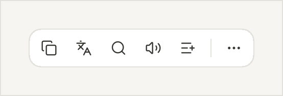
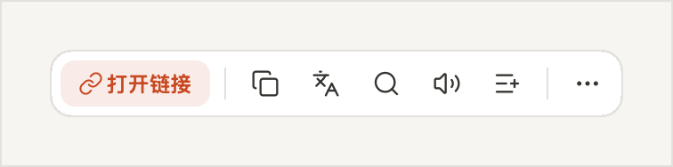
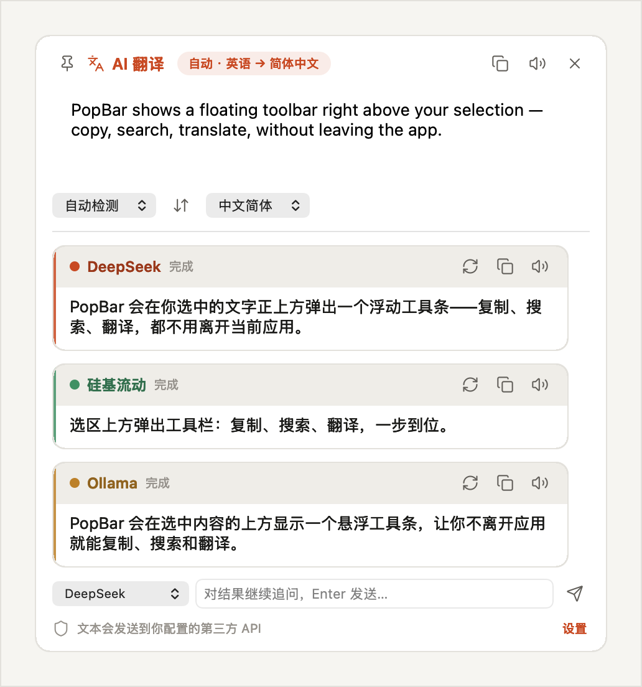
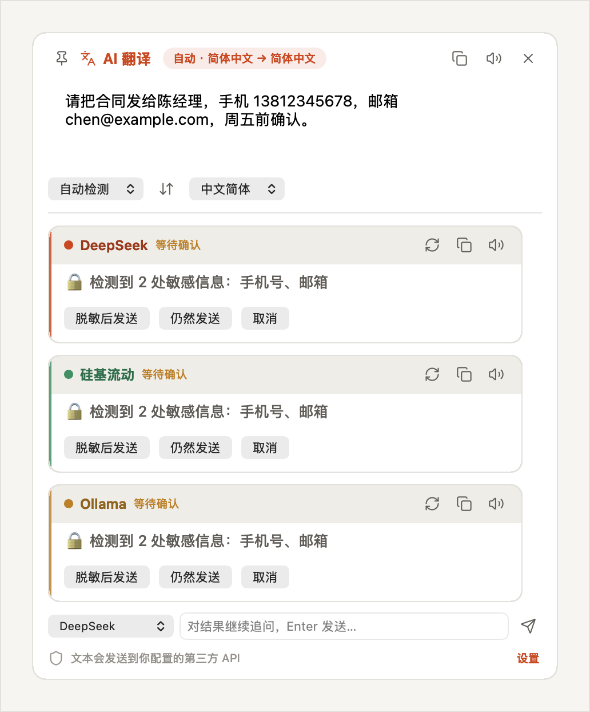
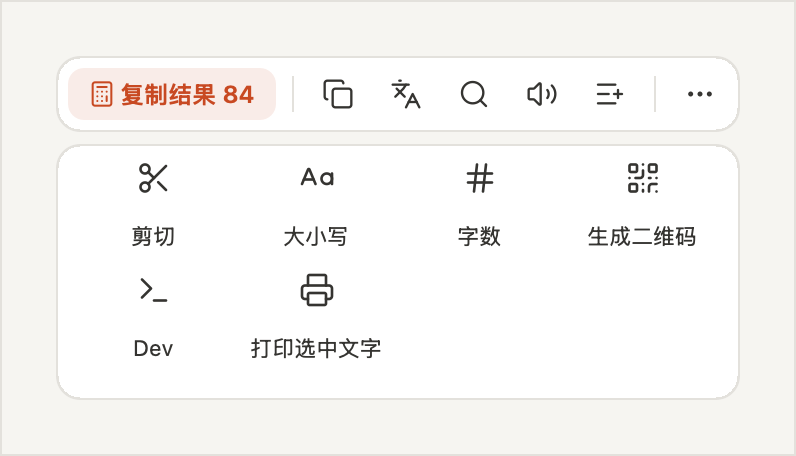
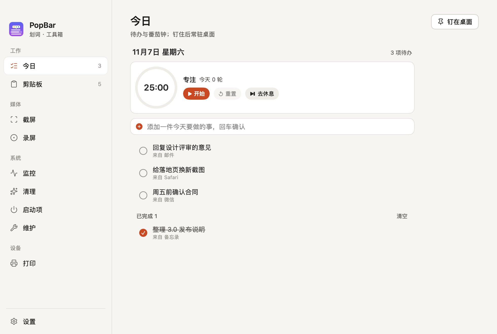
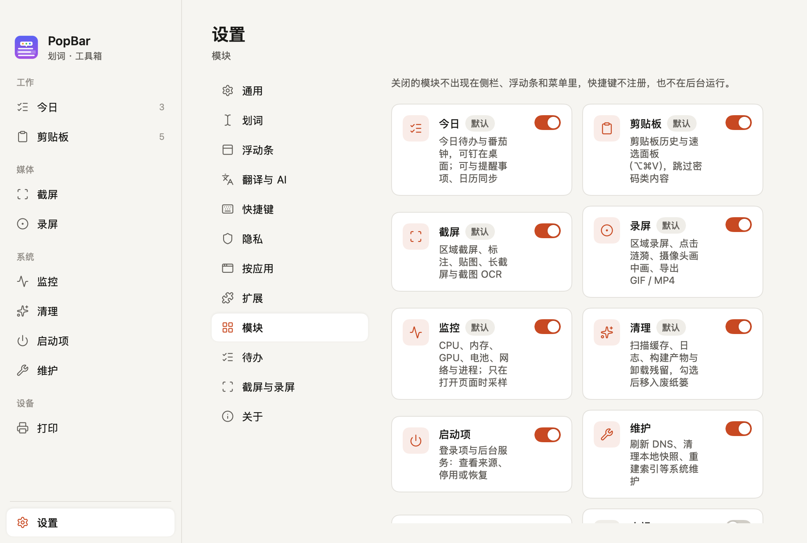
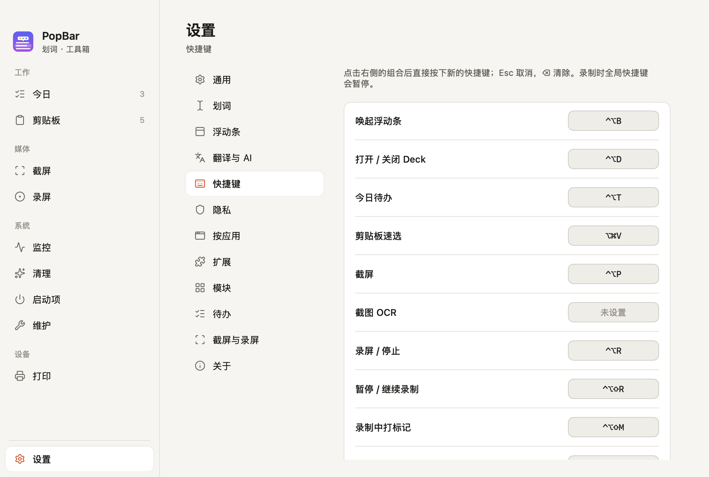

拖选或双击一段文字，浮动工具条就出现在选区正上方：复制、翻译、搜索、朗读、加入待办，不用切换应用。3.0 再把截屏、录屏、监控、清理等十个工具收进一个 Deck 窗口。

Select any text and a floating toolbar appears right above it — copy, translate, search or read it aloud, without leaving the app.
划词即弹 · AI 翻译 · 智能胶囊 · 隐私守卫 · Deck 主窗口 · 模块开关 · 明暗主题 ｜ 配乐：“Smile” by LiQWYD（CC BY 4.0）
工具条只在你选中文字时出现，用完就收起。
识别链接、算式、颜色、时间戳、JSON、Base64、文件路径、电话、地址等 14 类内容，最相关的一键操作放在最左边。

接入任意 OpenAI 兼容服务：DeepSeek、硅基流动、Ollama……多个 provider 并行流式返回，还能就地追问。

发给 AI 之前检查手机号、身份证、银行卡、邮箱、API Key、私钥、内网 IP，可询问、自动脱敏或关闭。

剪切、大小写、字数、二维码、脱敏、开发者工具、打印、扩展……在「设置 → 浮动条」里排序和挑选常用按钮。

⌃⌥D 打开。今日、剪贴板、截屏、录屏、监控、清理、启动项、维护、打印、电视，按「工作 / 媒体 / 系统 / 设备」分组，原来的十几个浮窗和两个设置窗口都合并进来。

每天一个 Markdown 文件，没做完的自动顺延；内置番茄钟，可选与提醒事项、日历同步。
关掉的模块不出现在侧栏、浮动条和菜单里，快捷键不注册，也不在后台运行。快捷键由系统注册，冲突当场标红。


从 GitHub Releases 下载 DMG，拖进「应用程序」。
# 到 Releases 页面下载最新 DMG
open https://github.com/davidzhanghui/popbar/releasesDMG 未经 Apple 公证，首次打开若提示「已损坏」，在终端执行 xattr -cr /Applications/PopBar.app 后重开。
SwiftPM 工程，不需要 Xcode 工程文件，一条命令编译、打包、生成 DMG。
git clone https://github.com/davidzhanghui/popbar.git
cd popbar
./build.sh # → build/PopBar-*.dmg需要 macOS 15+。首次使用按引导授予「辅助功能」权限；截屏、截图翻译、录屏还需「屏幕录制」权限。